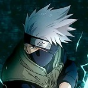

Selecione um personagem
- 
Naruto
Naruto Uzumaki é um menino que vive em Konohagakure no Sato ou simplesmente Konoha ou Vila Oculta da Folha, a vila ninja do País do Fogo. Quando ainda bebê, Naruto teve aprisionada em seu corpo a Kyuubi no Youko por Minato Namikaze (quarto Hokage, e seu pai).